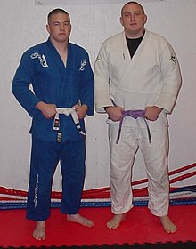
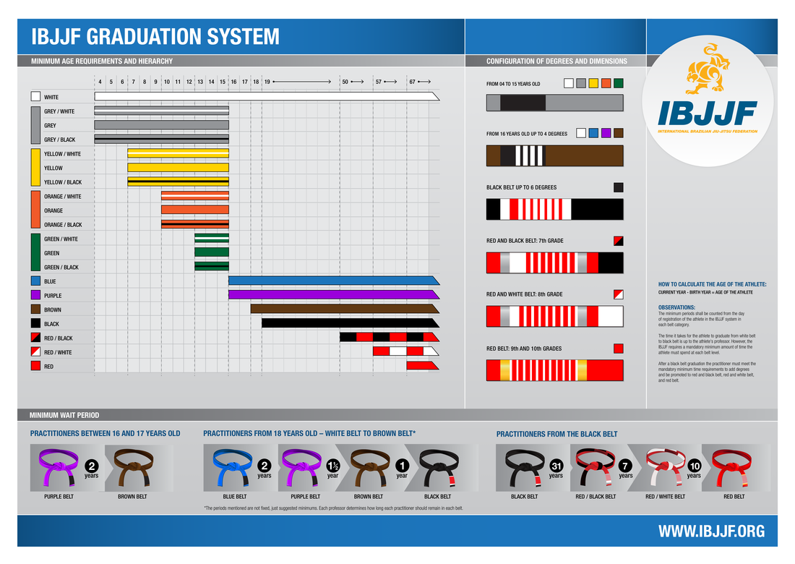
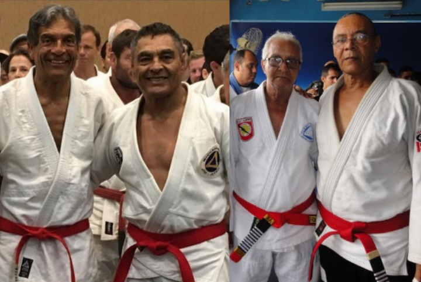

Videos
About

Brazilian jiu-jitsu (BJJ; Portuguese: jiu-jitsu brasileiro) is a self-defence martial art and combat sport based on grappling, ground fighting, and submission holds. BJJ approaches self-defense by emphasizing taking an opponent to the ground, gaining a dominant position, and using a number of techniques to force them into submission via joint locks or chokeholds. Brazilian jiu-jitsu was initially developed in 1925 by Brazilian brothers Carlos, Oswaldo, Gastão Jr., O’Brien, and Hélio Gracie, after Carlos was taught jiu-jitsu by a travelling Japanese judoka, Mitsuyo Maeda, in 1917. Later on, the Gracie family developed their own self-defense system, and published Gracie Jiu-Jitsu. BJJ eventually came to be its own defined combat sport through the innovations, practices, and adaptation of Gracie jiu-jitsu and Judo, and became an essential martial art for modern MMA. BJJ revolves around the concept that a smaller, weaker person can successfully defend themselves against a bigger, stronger, heavier opponent by using leverage and weight distribution, taking the fight to the ground and using a number of holds and submissions to defeat them. BJJ training can be used for sport grappling and self-defense situations. Sparring, commonly referred to as "rolling" within the BJJ community, and live drilling plays a major role in training and the practitioner's development. BJJ can also be used as a method of promoting physical fitness, building character, and as a way of life.
Uniform
The Brazilian jiu-jitsu practitioner's uniform commonly referred to as gi or kimono is similar to a judogi, but with slight differences in the dimensions and often made of lighter material with tighter cuffs on the pants and jacket. This allows the practitioner to benefit from a closer fit, providing less material for an opponent to manipulate. Traditionally, to be promoted in Brazilian jiu-jitsu, the wearing of the Jiu-Jitsu gi while training is a requirement. Recently with the growing popularity of "no-gi" Brazilian Jiu-Jitsu has the practice of giving out belts to no-gi practitioners (e.g., Rolles Gracie awarding Rashad Evans a black belt) has become more common. There are certain differences between gi jiu-jitsu and "no-gi" jiu-jitsu. In gi jiu-jitsu one can grip an opponent's uniform, using it to submit or advance position. There are a number of submissions that are specific to the gi, such as the "Loop choke", "Collar choke", and others. A specific set of rules to guide no-gi competitions is issued by the IBJJF, but there may be variation in the set of rules applied in each competition. By IBJJF rules uniform grips are not permitted in "no-gi" jiu-jitsu. No-gi Jiu-Jitsu practitioners, therefore, don't wear the traditional gi or kimono (which increases the athlete's weight and limits mobility). BJJ athletes who practice no-gi usually wear a rash guard and MMA shorts or Spats.
Grading
Kids
| Order | Belt | Minimum Age |
Minimum time in Grade |
|---|---|---|---|
| 1 | White | Any | 1 year |
| 2 | Grey | 4 | 1 year |
| 3 | Yellow | 7 | 1 year |
| 4 | Orange | 10 | 1 year |
| 5 | Green | 13 | 1 year |
Adults
| Order | Belt | Minimun Age |
Minimun time in Grade |
|---|---|---|---|
| 1 | White | Any | 1 year |
| 2 | Blue | 16 | 2 years |
| 3 | Purple | 16 | 1.5 years |
| 4 | Brown | 18 | 1 year |
| 5 | Black | 19 | 31 years |
| 6 | Black/Red | 50 | 7 years |
| 7 | Red/White | 57 | 10 years |
| 8 | Red | 67 |
Jiu-Jitsu Grand Masters
- Carlos Gracie
- Oswaldo Gracie
- Gastao Gracie Jr.
- George Gracie
- Helio Gracie
- Oswaldo Fadda
- Luiz França Filho